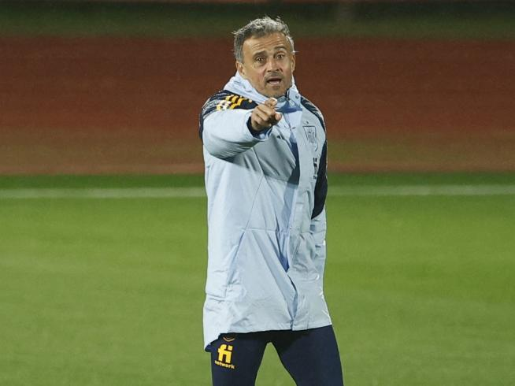
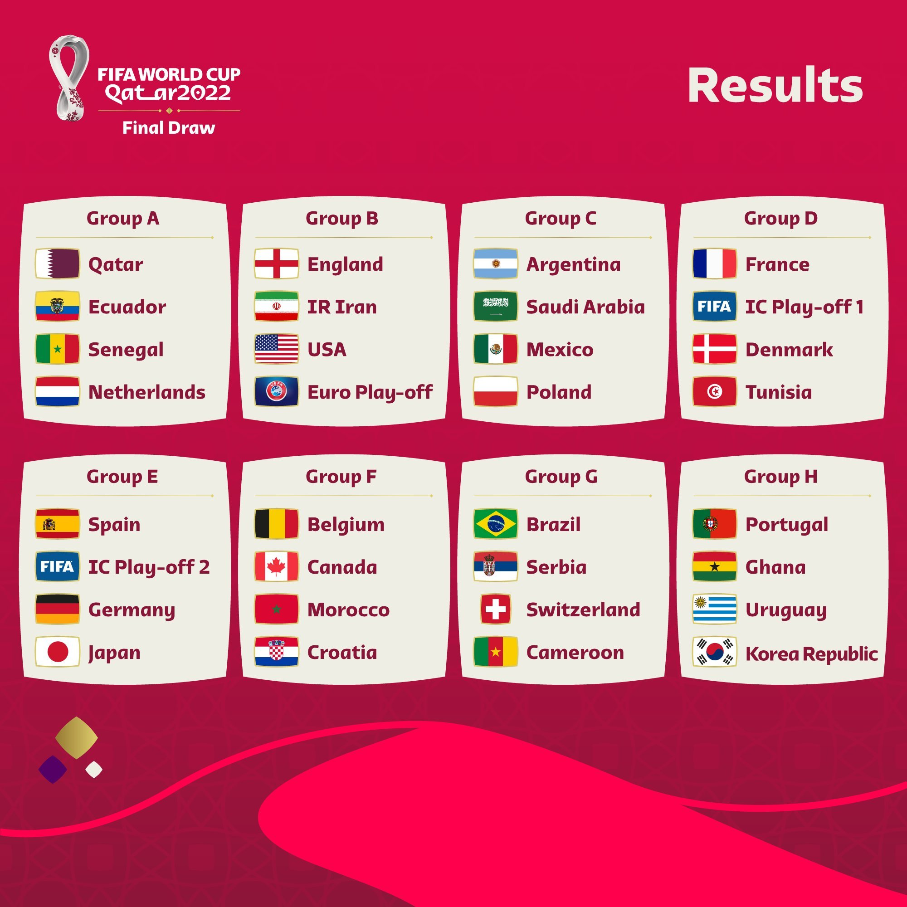
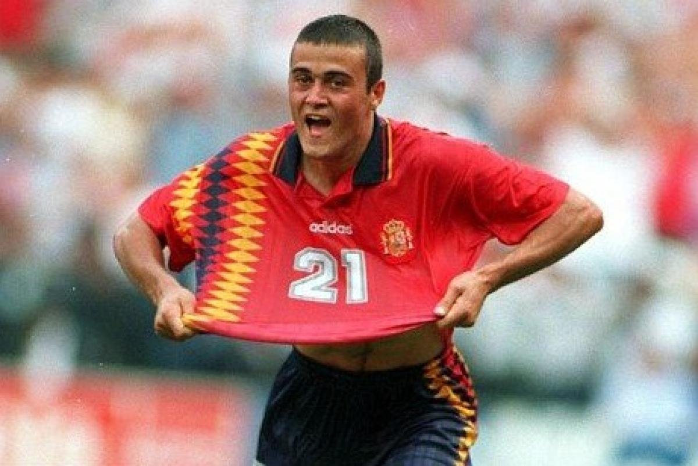

Haz click para volver al Índice
Luis Enrique no para de sorprendernos. Día si, día también el seleccionador español es capaz de llamar la atención de la prensa española y de sus detractores. La semana pasada ya empezó cierto "run run" entre los seguidores por la convocatoria, pero sin importarle las críticas hoy ha vuelto a ser capaz de sorprendernos y ha anunciado que durante el mundial en Qatar, emitirá todos los días en la plataforma de Twitch para hablar de tú a tú con los aficionados españoles.
La decisión, es rompedora, llamativa, digna de él, pero a la vez da un paso más acercando a los dioses del fútbol a las personas corrientes. En su comunicado, como el bien cita, se ha comprometido a hablar sin tapujos, de lo que le pregunten e intentar dar respuestas a sus polémicas decisiones. Si lo vemos desde un punto de vista neutral, y evaluamos a nuestro director técnico, puede ser que tome esta medida para quitar presión a sus jugadores. Hay que tener en cuenta que la selección cuenta con un bloque muy joven de futbolistas, la gran mayoría inexpertos en competiciones internaciones y con apenas 3 temporadas siendo referencias en el fútbol mundial. Además, si este fuese el polvorín de su decisión, Luis Enrique sería el centro de la crítica y el que debería manejar la presión, el cual es un experto.
El seleccionador siempre ha sido muy innovador y siempre ha sorprendido con alguna que otra decisión estrambótica. Vayamos a repasar alguna de las diferentes decisiones:
A dos meses de finalizar su contrato, puede ser que afronte su última convocatoria al frente de la selección. Su renovación dependerá todo del papel que realice la selección en el mundial y como se apunte a su figura delante del éxito o los fracasos.
Si observamos el grupo en el que jugará el combinado español, es más que asequible, pero en las fases eliminatorias ya será otra historia. Competir contra grandes candidatas como Brasil, Francia o Argentina será un reto muy complicado, pero porque no soñar y esperar volver con el trofeo bajo los brazos, y si puede ser disfrutando de nuestro seleccionador muchos más años.
Cabe recordar que como jugador disputó 3 mundiales: Estados Unidos 1994, Francia 1998 y el escandaloso mundial de Corea del Sur y Japón de 2002. En total, disputó 12 partidos en los que sólo fue capaz de ver portería en dos de ellos. Por otro lado, lo mas lejos que llegó con la selección fueron unos cuartos de final. Desde un punto de vista objetivo, son unos números muy pobres, los cuales esperemos que su períplo como entrenador sea más exitoso.
Links de referencia:
Enlace a la notícia de Marca
Enlace al Twitch de Luis Enrique
Haz click para volver al Índice